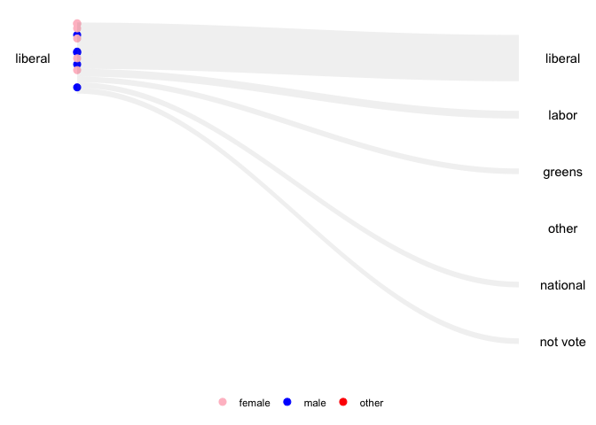

“animbook” is a package to help the user visualize the changes in performance measures and demographic affiliations using animation. It is a package to help prepare, plot, and animate the data.
Installation
You can install the development version of animbook from GitHub with:
install.packages("animbook")Examples
Accounting database: osiris
data <- osiris |>
filter(country %in% c("US", "JP"))
label <- c("Top 25%", "25-50", "50-75", "75-100", "Not listed")
accounting <- anim_prep(data,
id = ID,
values = sales,
time = year,
label = label,
ncat = 4,
group = country)
p <- wallaby_plot(accounting,
group_palette = RColorBrewer::brewer.pal(9, "Set1"),
shade_palette = c("#777777", "#777777", "#777777",
"#777777", "#777777"),
subset = "bottom",
relation = "many_one",
height = 1,
size = 2,
width = 100,
total_point = 1000)
#> You can now use the animbook::anim_animate() function to
#> transform it into an animated object
p2 <- anim_animate(p)
#> You can now pass it to gganimate::animate().
#> The recommended setting is nframes = 139
gganimate::animate(p2)
All the companies in the Top 25% were US companies. Any Japanese companies in the Top 25% in 2006 did not exit the market (Not listed). It is worth noting that in 2006, there were no Japanese companies in the Top 25%. It is also interesting that a large proportion of companies in the Top 25% are being de-listed, and the lower the quartile, the less likely the companies are to exit the market.
Voter behavior
library(animbook)
voter <- anim_prep_cat(data = aeles,
id = id,
values = party,
time = year,
group = gender,
order = NULL)
p_voter <- wallaby_plot(data = voter,
group_palette = c("pink", "blue", "red"),
shade_palette = c("#777777", "#777777", "#777777",
"#777777", "#777777", "#777777"),
time_dependent = FALSE,
rendering = "gganimate",
subset = "top",
relation = "one_many",
height = 1,
size = 2.5,
width = 100,
total_point = 1000)
#> You can now use the animbook::anim_animate() function to
#> transform it into an animated object
p2_voter <- anim_animate(p_voter)
#> You can now pass it to gganimate::animate().
#> The recommended setting is nframes = 139
gganimate::animate(p2_voter)
It reveals a pattern where individuals who identified their gender as ‘others’ have shifted their voting preference from the Liberal Party, the leading party in 2006, to the Greens Party.